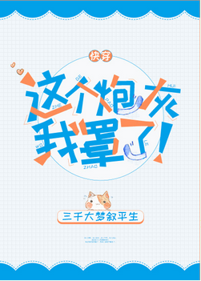

Lu Deng no es carne de cañón, pero su misión es salvar la miserable carne de cañón.
Un empresario que perdió en un juego de negocios. Un adolescente que guardó silencio ante la violencia escolar. El actor cuyo camino hacia la fama se vio arruinado por la violencia cibernética. Un hombre desconocido que fue incomprendido hasta el día de su muerte.
Sólo puede haber un protagonista en cada mundo, por lo que el destino se esconde en un rincón enviando sus frías tiendas de campaña hacia los inocentes.
Algunas personas permanecen en silencio, otras optan por hacer concesiones, otras no están dispuestas y otras se sienten satisfechas.
Siempre debe haber personas que los abracen.
Entonces Lu Deng fue a abrazarlo.
Entonces la gente no lo dejará ir.
[Lu Deng: Eso… ¿Has abrazado lo suficiente? Preguntas frecuentes]